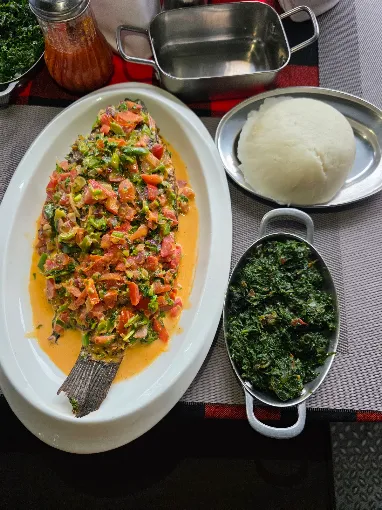
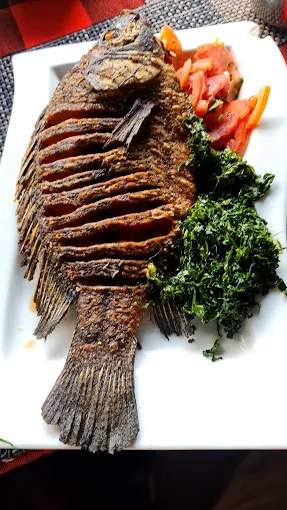
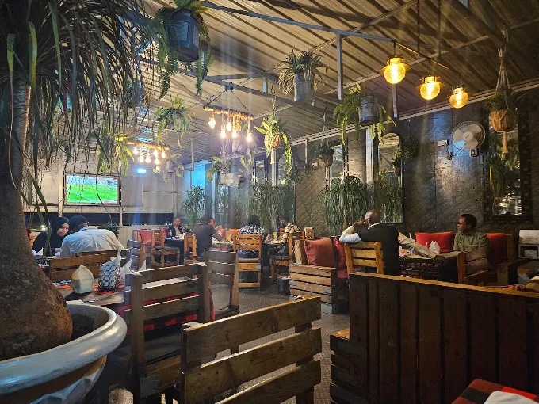
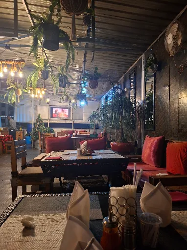
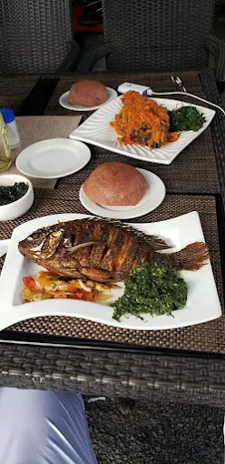
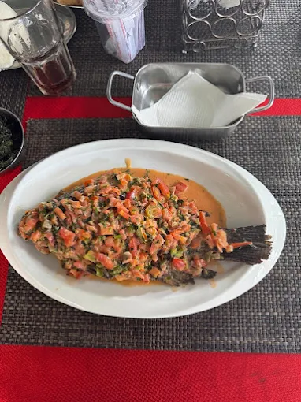
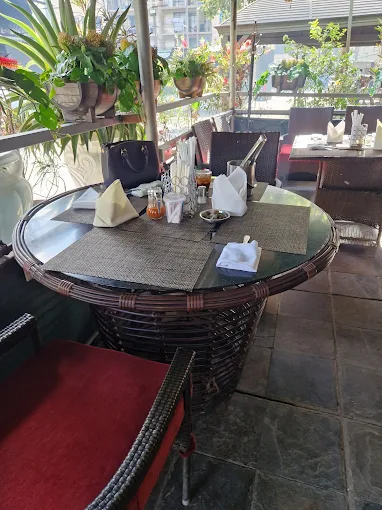
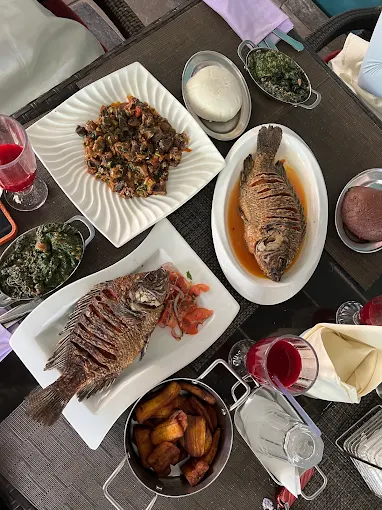
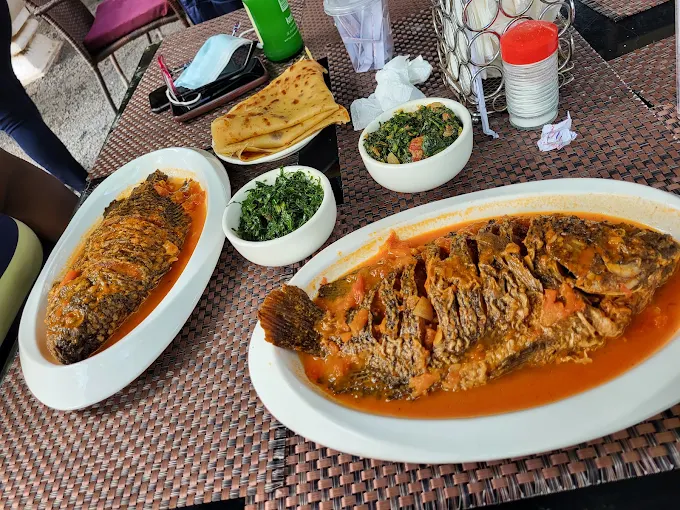
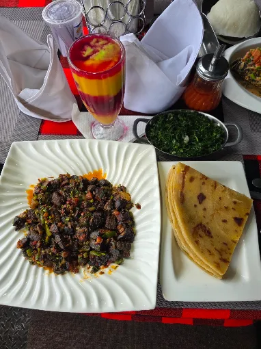

House favourite
Wet Fry Tilapia
Whole fish in a rich tomato and herb sauce, served for a proper Kenyan meal.

Nairobi's legendary fish house
Whole tilapia, ugali, sukuma wiki and the kind of East African hospitality people recommend for years.
The Mama Oliech story
Mama Oliech is known for food that feels direct, honest and generous. The restaurant's identity is rooted in whole fish, Kenyan sides and a relaxed atmosphere that keeps people coming back.
This concept makes the fish the star while preserving the warmth and familiarity that give the restaurant its reputation.


Signature fish
Official dish names, portion sizes and prices can be added before launch.

Whole fish in a rich tomato and herb sauce, served for a proper Kenyan meal.



The experience
The hanging plants, warm bulbs and informal seating create a place that feels more like a gathering spot than a formal dining room.
From the table



Plan your visit
Wet fry, dry fry, ugali, greens and sharing plates.
A relaxed setting for generous meals and conversation.
Connect calls, WhatsApp and directions before launch.